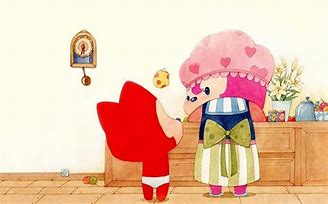
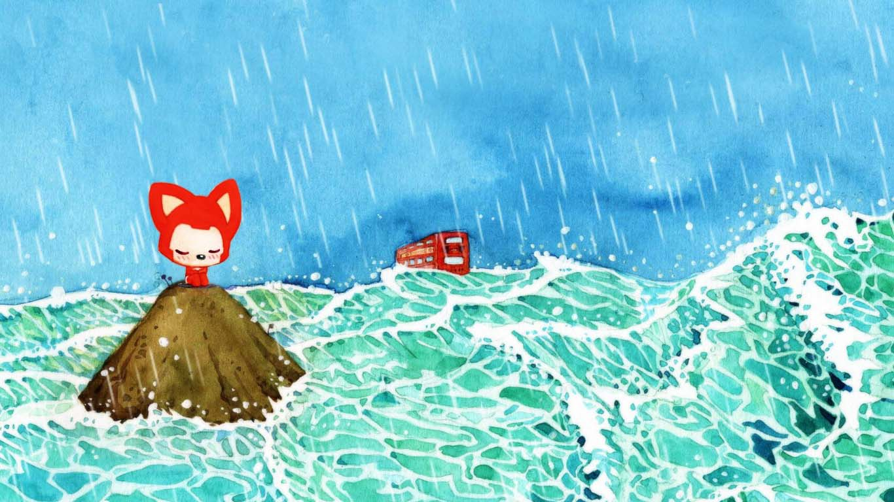
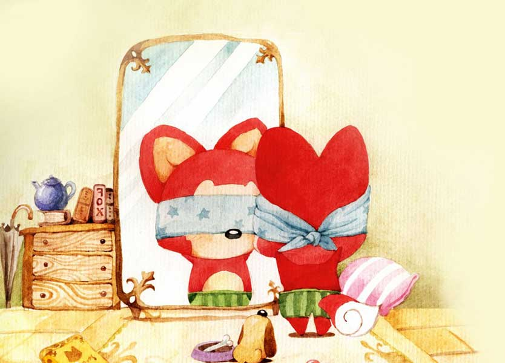
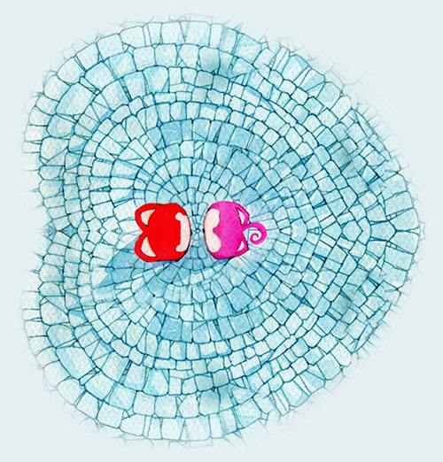
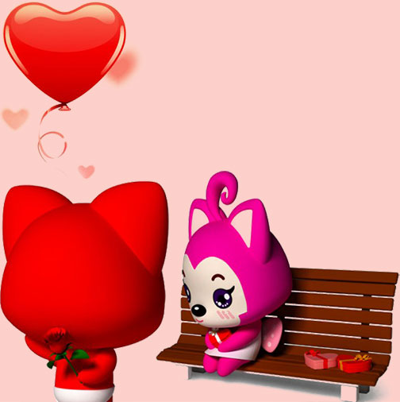
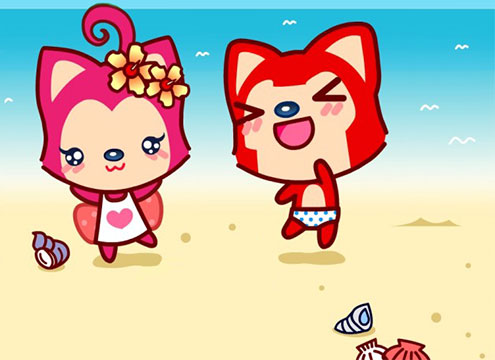
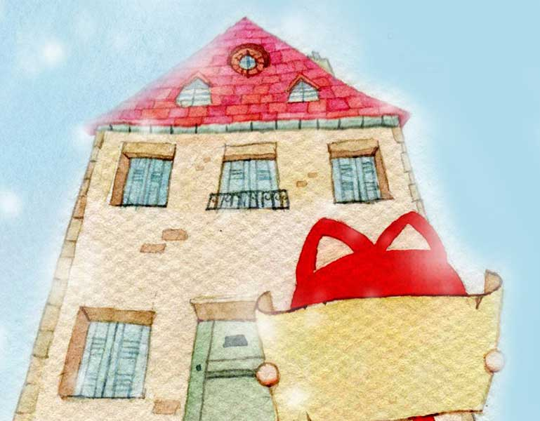

卢先生给田小姐的告白书
向下滑动手机屏幕开始倾听
过去的他一直是一个人生活，享受着孤独，也有过很多奇思妙想。

总是觉得平淡的生活应该偶尔用浪漫来装点

在学校的树下学黛玉葬过诗

和暗恋过的女孩儿通过信

给毕业的陌生前辈送过花儿

他很喜欢动漫

有时候一个人看着屏幕里别人的恋爱总是痴痴地傻笑
不止一次的幻想过

未来会有一个满眼都是他的女孩出现
就这样幻想着，憧憬着

一直在徘徊，在寻找，在流浪

直到她的出现
他们是生活里本不该有交集的两个人

但生活总是充满巧合
他就这样跌跌撞撞的走到了她的面前

最初 只是社交软件上一句简单的问候

但渐渐地他被她的温柔她的善意所感染

她就像一束温暖的光

一束从幻想照进现实的光


他不想让这束光在她手中被冷落，伤害
一颗善待别人的心，理应平等地被善待

他为她编织着浪漫的幻想

为她工作中的遭遇打抱不平

为她生活中的苦难感到痛心
和她同一战线
共同抵御来自外界的骚扰

他们的关系越来越好
她也给了他很多的第一次

第一次有人为他唱歌

第一次和别人亲吻

也是第一次这么心疼一个人

她比他想像的还要勇敢
他不想让她失望，不想让她流泪

他想好好守护这个满眼是他，真心待他的姑娘

世上没有两片相同的叶子
不想寄希望于缥缈的未来
只想珍惜眼前的这份心动
那个有她在的现在

这只船漂泊流浪了太久，他累了
他想留在这个温暖舒适的港口


如果说诗是浪漫，雨是浪漫
那么喜欢上她则是至今为止最浪漫的事了

以后的日子里


他想一直陪在她身边
晴朗平淡的时光里为她写诗
阴翳多雨的日子为她撑伞

未来的生活会很难
但只要有她在身边
未来就有了目标，生活就有了希望
此刻，他怀着这份浪漫的憧憬
在书桌前敲下这份独白


亲手编织着这份惊喜 偶尔对着满屏的文字沉思 想象着她看到这份礼物后 开心的样子

畅想着以后的日子 他们一起牵着手 去从来没有去过的地方 开心的跑，开心笑 慢慢的把彼此的记忆填满
即使偶尔困惑
迷失了前进的方向


她在哪里，泛滥的爱意和注视便在哪里


如果距离是限制
他会跨越山河去拥抱你
如果时间是阻隔
那就用不朽的诗篇和浪漫记录下心动的每一刻
这段话语，既是告白，也是约束，更是一次自我信仰的证明

所以请你记住接下来的这些话——

田贝贝，我喜欢你！
胜过喜欢雨，胜过喜欢诗!
我喜欢的不是女朋友这个角色！
而是你实实在在的这个人！
只能是你，只要是你，只会是你！！
其他人不想了解也不想认识！
我们在这个满是恶意的世界相遇
不想成为路人，陌生人，甚至是你口中的别人！
我耗尽毕生的运气才让命运把你送至我的身边
激动过，犹豫过，怀疑过，但却唯独不想错过！
此后，愿悲欢离合，喜怒哀乐，一颦一笑都与你有关！
此后，愿欢喜是你，思念是你，悲伤也是你
所以，接下来的路让我陪你一起走，好吗！
-- 双手缩放手机屏幕有惊喜or